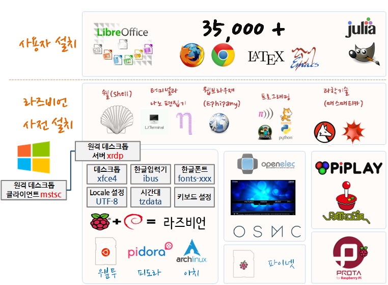
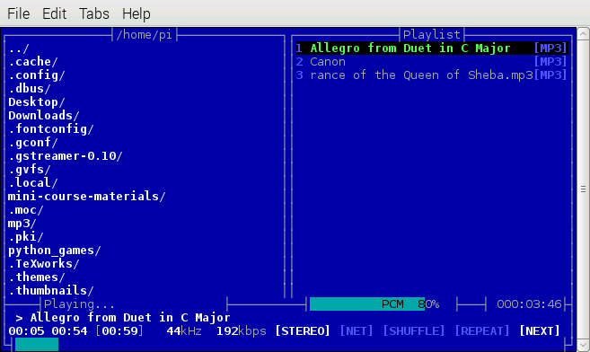
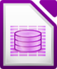
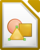
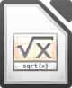
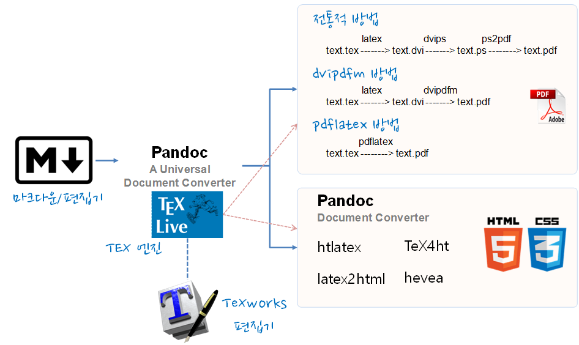
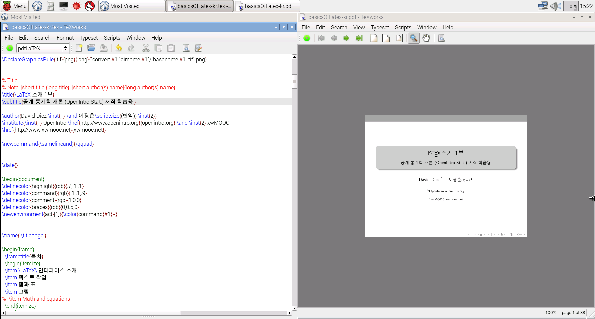

R 파이썬 소프트레이어 클라우드, xwMOOC
라즈베리파이 응용프로그램
학습 목표
- 미디어센터 가족 영화관을 구축한다.
- 오피스로 생산성 높은 다양한 사무 작업을 수행한다.
- 저전력 저소음 웹서버로 운영한다.
- 스크래치, 파이썬, 메쓰메티카 프로그래밍을 한다.
- LaTeX 으로 전자출판 조판 작업을 한다.

1. 가정 영화관 (Home Theater)
라즈베리 파이 2는 기존 브로드컴 BCM2835칩을 개선한 BCM2836칩을 사용하는데, H.264 형식을 사용해서 고해상도 비디오 정보를 고속으로 전송할 수 있다. 가족용 영화관 구성을 위해서 크기가 작고, 저전력이며 조용한 운영방식이 필요한데 라즈베리파이는 이 요건을 잘 충족하고 있다. 다양한 미디어를 라즈베리 파이에서 즐기는 방식은 크게 두가지가 있다.
- 콘솔에서
moc를 사용해서 즐기는 방식으로, 주로 명령라인 인터페이스 작업을 하는 개발자가 따로 GUI를 띄우지 않고도 미디어를 즐기는 방식이다.- moc (콘솔에서 음악, Music on Console)는 그래픽 사용자 인터페이스가 없더라도 콘솔에서 음악을 즐길 수 있게 한다.
- 설치 명령어는
sudo apt-get install moc이다. - 그래픽 사용자 인터페이스 환경이 아닌 명령라인 인터페이스 환경에서 대부분의 시간을 보내는 경우
moc혹은mocp소프트웨어를 사용해서 음악을 즐길 수 있다.
- 미디어 센터(media center)를 라즈베리 파이에 전용 운영체제를 설치하고 미디어를 소비하는 방식이다.
- OSMC, 이전 RaspBMC
- 오픈일렉(openelec) Kodi 미디어센터
- OSMC와 오픈일렉은 일부 성능과 편의성에 차이가 있을뿐 대부분의 기능은 동일하다. 성능을 추구하고자 하면 오픈일렉, 편리성에 방점을 두신 분은 OSMC가 다소 강점이 있는 듯 하다.

OSMC나 오픈일렉 같은 미디어센터를 설치하고 나면, 미디어 정보를 가져와서 소비해야 한다. 미디어 정보를 가져와서 재생하는 방식에는 두가지가 있다.
- 스트리밍 방식 : 네트워크 미디어 정보에서 음악, 영화든지 상관없이
Add-on(애드온)을 설치해서 채널을 뚫고 해당 채널을 실행하면 스트리밍 방식으로 미디어가 날아온다. - 스토리지 저장 방식 : 로컬 스토리지 미디어 정보를 Universal Plug and Play (UPnP) 미디어 전송 표준이 지원해서 네트워크 부착 저장장치(NAS, Network-Attaced Storage) 등을 통해서 사진, 음악, 동영상 등을 공유한다. 물론 스토리지 저장소의 공유 설정을 해야하고 필요한 경우 비밀번호를 입력해서 접근한다.
2. 사무 생산성 향상
설치형 프로그램과 클라우드 프로그램
- 설치형 프로그램
- 리브레 오피스: 오픈 오피스(Open Office) 맥을 잊는 공개 오피스 프로그램
- 클라우드 오피스 프로그램
클라우드 프로그램을 잘 사용하려면 궁합이 맞는 웹브라우저가 필수적이다. 최근 많이 사용되는 웹브라우져는 운영체제 못지 않은 복잡성과 수많은 과학 공학적인 지식이 필요하다. 불행히도 라즈베리 파이에 설치된 미도리 혹은 이페퍼니 같은 웹브라우져는 부족한 면이 많다. 따라서, 모질라 재단의 불여우(Firefox) 혹은 크롬미엄(Chromium)을 설치해서 사용한다. sudo apt-get install chromium-browser, sudo apt-get install firefox 명령어로 설치한다.
2.1. 리브레 오피스
워드, 한글, 파워포인트 등 사무작업을 위한 마이크로소프트 오피스가 상업용으로 많이 사용되고 있지만, 마이크로소프트 상용 오피스 제품에 대응되는 공개 오피스 소프트웨어도 다양하다. 리브레 오피스(LibreOffice)는 기존 오픈 오피스(Open Office) 개발에 참여한 인력이 나와서 만든 공개 오피스 제품으로 아래한글 뿐만 아니라 마이크로소프트 오피스와도 기능적 별반 차이가 없다. 최근에는 오피스 작업 파일간 호환성도 많이 개선되어 평균적인 기능을 사용한다는 측면에서 공개 소프트웨어 활용도가 많이 높아졌다.
리브레오피스 한국어 사이트에서 공식적인 정보를 얻을 수 있으며, Pootle 서버를 통해서 한국어 번역어 번역이 활발히 진행되고 있다. 다큐먼트 재단 홈페이지가 공식 홈페이지이며, 과학 IT 동아에서 무료 오피스의 진수, ‘리브레 오피스’ 제목으로 리브레 오피스에 대해 기사로 소개가 되었다.
| 국문 | 영어 | 설명 | |
|---|---|---|---|
| 라이터 | Writer | 워드프로세서 프로그램으로 마이크로소프트 워드와 비슷하며 기본적인 위지위그 편집기를 지녔다. | |
| 캘크 | Calc | 스프레드시트 프로그램이다. 마이크로소프트 엑셀 또는 로터스 1-2-3과 비슷하다. | |
| 임프레스 | Impress | 프레젠테이션 프로그램이다. 마이크로소프트 파워포인트와 비슷하다. | |
|  | 베이스 | Base | 데이터베이스 관리 프로그램이다. 마이크로소프트 액세스와 비슷하다. |
|  | 드로우 | Draw | 벡터 그래픽 에디터다. 도표 프로그램인 마이크로소프트 비지오와 비슷하다. |
|  | 매쓰 | Math | 수학 공식을 만들고 수정하는 프로그램이다. 마이크로소프트 수식편집기와 유사하다. |
전체 리브레오피스 설명은 위키 사이트에 연결된 문서를 참조한다. 오픈 오피스 한글화 프로젝트가 얼마전까지 활발히 진행되어 3.X 버젼까지 많은 한글 자료가 있으나, 이제는 리브레오피스가 소프트웨어 한글화부터 문서도 차근히 한글화를 추진하고 있다.
pi@raspberrypi ~ $ apt-cache pkgnames libreoffice
pi@raspberrypi ~ $ apt-get install libreoffice3. 김프(Gimp) 이미지 편집
이미지 편집 분야에서 가장 많이 사용되는 것이 김프(GNU Image Maniuplation Program, GIMP)다. 김프는 상용 그래픽 편집 프로그램 아도비사 포토샵에 대응되도록 공개 소프트웨어 진영에서 개발한 소프트에어로 일부 기능이나 사용법에서 차이가 있지만, 상당부분 유사하다. 마치 마이크로소프트 오피스와 리브레 오피스와 비교하면 느낌이 올 것이다. 설치 방법은 sudo apt-get install gimp 다.
4. LaTeX 으로 전자 출판 작업
스탠포드 대학 D. Knuth 교수가 창안한 TeX은 현존하는 가장 훌륭한 조판 엔진(typesetting engine) 중 하다. texlive-full 을 설치하면 저장공간은 제법 차지하지만 별도 팩키지를 설치할 필요없어 초보자가 탁상전자출판을 시작하기 딱 좋다. 다양한 TeX 작업을 위한 프론트엔드(front-end) 편집기가 있지만, 크로스 플랫폼을 지원하는 TeXworks을 사용하면 생산성을 많이 높일 수 있다.

sudo apt-get update
sudo apt-get dist-upgrade
sudo apt-get install -y texlive-full
sudo apt-get install -y texworks
$ htlatex latex-intro-kr.tex "xhtml, mathml, charset=utf-8" " -cunihtf -utf8"참고문헌 : LaTeX to PDF